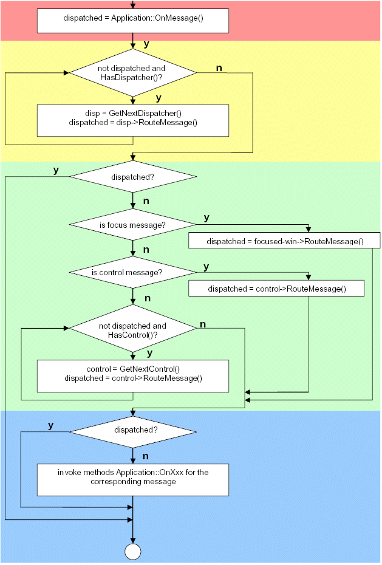
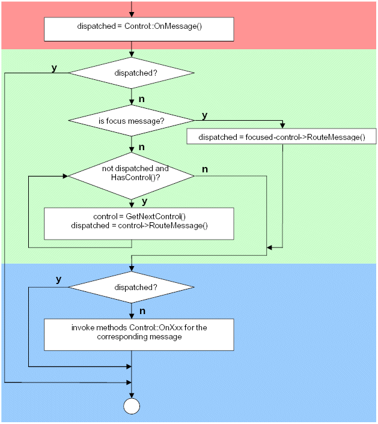

APOXI Message Routing
1 Introduction
In APOXI messages are treated by any instance of the class Dispatcher. Typical dispatchers are
the classes Application and Control.
2 Application
When an application gets a message, the method Application::RouteMessage is invoked,
which treats the message the following way:

The message is forwarded to the method Application::OnMessage, which may be overwritten
to dispatch the message. Usually TRUE is returned, if the message has been dispatched and should
not be routed anymore.
The message is forwarded to each embedded UserDispatcher until one dispatcher returns TRUE
or no dispatcher is left anymore. A UserDispatcher may be embedded into
the application by Application::AddDispatcher.
The routing of the message depends from the message category:
- MC_FOCUS: The message is forwarded to the focused Window.
- MC_CONTROL: The message is forwarded to the Control which should
get the message
- For messages which another category the message is broadcasted to all embedded controls of the application
until one control returns TRUE or no control is left anymore.
For all messages where the class Application offers OnXxx-methods (e. g. OnGetFocus)
the corresponding OnXxx-method is invoked.
3 Control
When a control gets a message, the method Control::RouteMessage is invoked,
which treats the message the following way:

The message is forwarded to the method Control::OnMessage, which may be overwritten
to dispatch the message. Usually TRUE is returned, if the message has been dispatched and should
not be routed anymore.
The routing of the message depends from the message category:
- MC_FOCUS: The message is forwarded to the focused child control.
- MC_CONTROL: The message is forwarded to the child control which should
get the message
- For messages which another category the message is broadcasted to all embedded child controls of the control
until one sub control returns TRUE or no sub control is left anymore.
For all messages where the class Control offers OnXxx-methods (e. g. OnGetFocus)
the corresponding OnXxx-method is invoked.